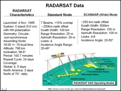
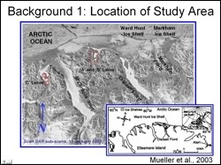
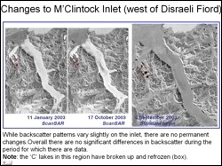

 This study relied heavily on Radarsat data acquired by the Alaska Satellite Facility (ASF). The objective of the study was to determine if known changes in the epishelf lake environment on Disraeli fiord can be documented using SAR data, and if so to formulate a hypothesis as to why this is possible. The second objective was to examine inlets and fiord adjacent to the Disraeli Fiord to determine if similar changes in hydrology have occurred.
 The selected study area, Ellesmere Island, is the northern most island in Canada. It's north coast, which is located at approximately 83.5°N is characterized by mountains with deeply incised fiords and inlets. This figure shows a winter ScanSAR sub scene covering the study area. The small red boxes indicate locations of freshwater lakes that have perennial ice covers.
 Visual interpretation of geocoded multitemporal SAR images of the study area was carried out to study the backscatter response in the fiords and inlets over time. Several interesting observations were made and interpretation on these observations is still in progress. SAR images show evidence of break-up and refreezing of perennially ice covered lakes. Efforts for a longer term monitoring of the study area and using digital processing techniques on SAR data (speckle suppression, filtering, contrast enhancement etc.) are underway.